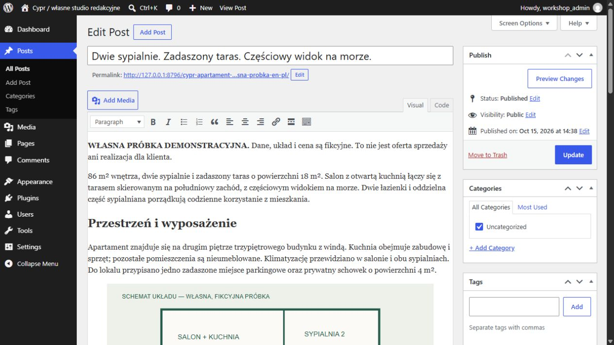
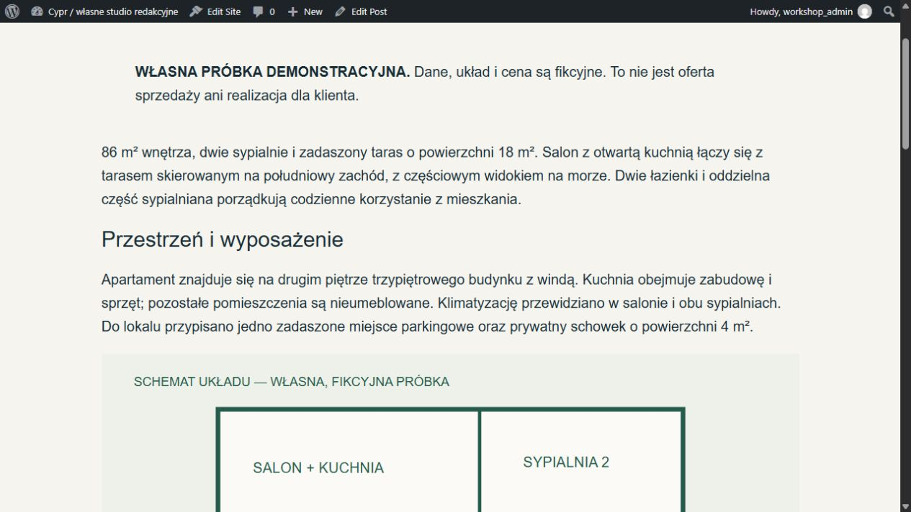
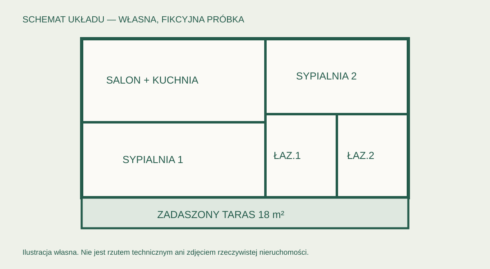
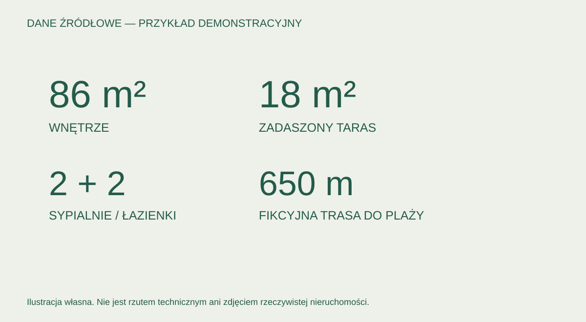

Solid Digital / autorska próbka redakcyjna i techniczna
Od angielskich danych do edytowalnej oferty w WordPressie.
Fikcyjny apartament na Cyprze: samodzielna redakcja polskiego opisu, sprawdzone parametry, podstawowe SEO i rzeczywisty zapis w natywnym CMS.
To własna demonstracja, nie realizacja komercyjna. Dane, cena i ilustracje są fikcyjne. Próbka nie przedstawia prawdziwej inwestycji, panelu klienta ani wyników sprzedaży. Ta strona jest statycznym portfolio; poniższy podgląd pochodzi z treści rzeczywiście zapisanej w osobnym lokalnym WordPressie.
12 blokówNatywne akapity, nagłówki, obrazy i tabela. Treść zachowuje zapis w 12 blokach. Interfejs edycji: natywny Classic Editor WordPressa. Szablon dodaje jeden H1 z bloku post-title.
2 mediaRzeczywiste rekordy biblioteki: tytuł, podpis, alt, plik i metadane.
3 odczytyOsobny PHP, SQL i HTTP. Zachowanie wpisu po restarcie serwera.
Zakres i kontrola
Źródłowa karta EN i autorski polski opis, bez tłumaczenia zdanie po zdaniu.
Weryfikacja: 86 m² wnętrza, taras 18 m², 2 sypialnie, 2 łazienki, częściowy widok i wspólny basen.
Tytuł i opis SEO, czytelna struktura nagłówków, tabela parametrów i własny slug.
Jeden H1 z natywnego bloku core/post-title w szablonie single.html; tytuł dokumentu SEO odczytany z własnego metapola.
Natywny wpis WordPress #28, status publish. Zapis za pomocą API WordPressa, nie statycznego zastępnika CMS.
Osobna baza i port. Hash oryginalnej bazy oraz konfiguracji pozostawał taki sam.
Dowód techniczny: 2026-10-15T14:50:00.965912+00:00. Wersja CMS: WordPress 7.1.3. Nie deklarujemy ACF Pro, WPML, panelu dewelopera ani doświadczenia z płatnego projektu. Rzeczywisty klasyczny edytor WYSIWYG i treść publicznej strony sprawdzono w przeglądarce. Canvas Gutenberga w użytej przeglądarce był pusty; nie deklarujemy jego poprawnego działania. Treść pozostaje w bazie jako 12 bloków.
Rzeczywisty panel i strona WordPress
Sprawdzony natywny Classic Editor / TinyMCE pokazuje tytuł, treść i ilustracje. Drugi zrzut przedstawia fragment opublikowanej strony. To własna lokalna instalacja.

Klasyczny edytor WordPress / TinyMCE. Wyraźnie oznaczona własna próbka.

Fragment rzeczywistej strony WordPress; opis i własna ilustracja.
Podgląd wyeksportowanej treści
To statyczny eksport treści natywnego wpisu, a nie działający panel CMS. Dwa obrazy to własne schematy demonstracyjne, nie fotografie ani rzuty rzeczywistej nieruchomości.
Dwie sypialnie. Zadaszony taras. Częściowy widok na morze.
WŁASNA PRÓBKA DEMONSTRACYJNA. Dane, układ i cena są fikcyjne. To nie jest oferta sprzedaży ani realizacja dla klienta.
86 m² wnętrza, dwie sypialnie i zadaszony taras o powierzchni 18 m². Salon z otwartą kuchnią łączy się z tarasem skierowanym na południowy zachód, z częściowym widokiem na morze. Dwie łazienki i oddzielna część sypialniana porządkują codzienne korzystanie z mieszkania.
Przestrzeń i wyposażenie
Apartament znajduje się na drugim piętrze trzypiętrowego budynku z windą. Kuchnia obejmuje zabudowę i sprzęt; pozostałe pomieszczenia są nieumeblowane. Klimatyzację przewidziano w salonie i obu sypialniach. Do lokalu przypisano jedno zadaszone miejsce parkingowe oraz prywatny schowek o powierzchni 4 m².

Schemat funkcjonalny fikcyjnego apartamentu — ilustracja własna, nie zdjęcie ani rzeczywisty rzut.

Parametry fikcyjnego apartamentu — ilustracja własna, nie zdjęcie ani rzeczywisty rzut.
Otoczenie i warunki
Mieszkańcy korzystają ze wspólnego basenu i ogrodu. Trasa piesza do plaży, przyjęta w fikcyjnym briefie, liczy 650 m. Cena demonstracyjna wynosi 349 000 EUR; podatki i koszty transakcji nie zostały określone. To przykład redakcyjny pokazujący pracę z konkretnymi danymi, bez dodawania obietnic, których nie zawiera źródło.
Parametry — według fikcyjnej karty źródłowej
Wnętrze
86 m²
Zadaszony taras
18 m²; południowy zachód
Widok
Częściowy widok na morze
Sypialnie / łazienki
2 / 2
Piętro
Drugie; trzypiętrowy budynek z windą
Wyposażenie
Zabudowa kuchenna i sprzęt; pozostałe pomieszczenia nieumeblowane
Klimatyzacja
Salon i obie sypialnie
Parking
Jedno przypisane, zadaszone miejsce
Schowek
Prywatny, 4 m²
Części wspólne
Basen i ogród
Trasa do plaży
650 m, pieszo według fikcyjnego briefu
Cena demonstracyjna
349 000 EUR
Podatki i koszty transakcji
Nieokreślone w źródle
Sposób przygotowania próbki
Materiał EN → selekcja danych → autorska redakcja PL → kontrola parametrów → struktura SEO → natywne bloki WordPress i opisy mediów. Ilustracje są własnymi schematami pokazującymi techniczny zapis w bibliotece mediów; nie zastępują zdjęć dewelopera.
Co oznacza pełna oferta dla klienta
Przy rzeczywistym zleceniu autor dostarcza i zatwierdza parametry, ceny, zakres wyposażenia oraz uprawnione zdjęcia. Na tej podstawie dobieramy fotografie, przygotowujemy opis i publikujemy go w uzgodnionej strukturze CMS. W tej demonstracji techniczny zapis mediów pokazują własne schematy; nie jest to dowód doboru zdjęć z nieudostępnionej broszury.